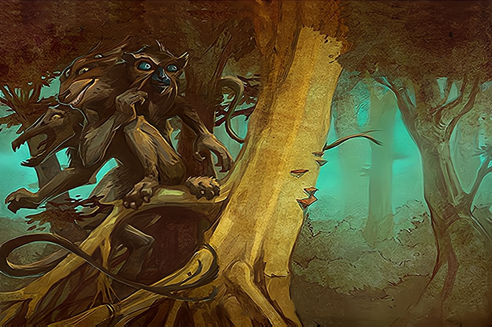

Grinning Trickster Stirs Up Trouble
There are many trickster Spirits, but this one is the most infamous due to its part in instigating the Second Great Reckoning between the Dahan and the Spirits. It wears any form it pleases - perhaps a tree, perhaps a canoe, perhaps a prominent clan-chief - but can always be distinguished by its multitude of eyes, though they may be subtle or concealed.
Despite its knack for stirring up trouble, it's neither unfriendly nor motivated by malice - it just has a driving curiosity to see what will happen when it messes around with things. Of course, this may involve putting Spirits, people, and animals alike into suddenly precarious situations, so
the Dahan appreciate its shenanigans best at a healthy distance.
SETUP:
Put 2 {presence} on your starting board: 1 in the highest-numbered land with {dahan}, and 1 in land #4.
Play Style:
Requires some comfort with risk: both Overenthusiastic Arson and Let's See What Happens involve uncertainty about how the {fast} Powers Phase will pan out.
Can be effective from the get-go, but benefits greatly from not working too hard, instead improving its capacity for mischief by adding {presence} and gaining Power Cards. Bonus Energy from Let's See What Happens can be extremely helpful in avoiding the distraction of gaining Energy elsewhere.
COMPLEXITY
Moderate
|
Summary of Powers
|
|
|
|
|
|
|
OFFENSE
|
CONTROL
|
FEAR
|
DEFENSE
|
UTILITY
|